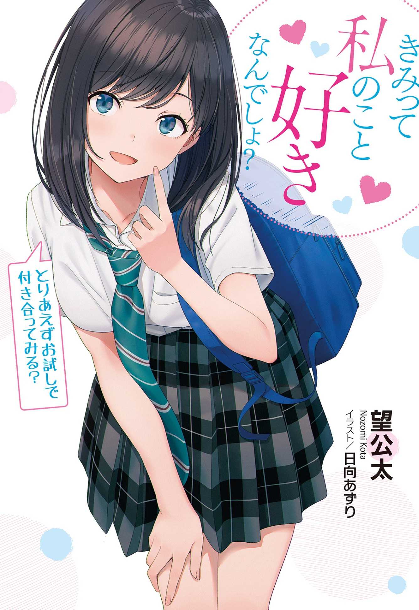

You Like Me, Don’t You? - So, How About We Give Dating A Try?
Novel Info's
Status: Axed
Genre: Comedy, Romance
Author: Nozomi Kota
Illustrator: Hyuuga Azuri
Volumes: 2
Original Publisher: GA Novel, Softbank Creative
English Publisher: Tentai Books
Fan Translation: N/A
Description/Sypnosis
“Hey Kuroya-kun, do you like me?”
“How did you know!?”
Unrequited love. What a shame for Kuroya, a gloomy student in high school.
The other party is Kasumi Shiramori, a senior in the literature club and a transcendentally beautiful girl. While spending time alone in the club, I should have hidden this feeling for a long time…!
Senior told Kuroya in desperation.
“Then -? Want to try dating me first?”
There’s no way a relationship exists in the minds of these two!?
No, wait, it should be like this-
Both the feelings and the super-sweet romantic comedy of youth are full of faintness in the misery of a longing senior who is teased despite being in a relationship!
Download Links
Epub & Pdf